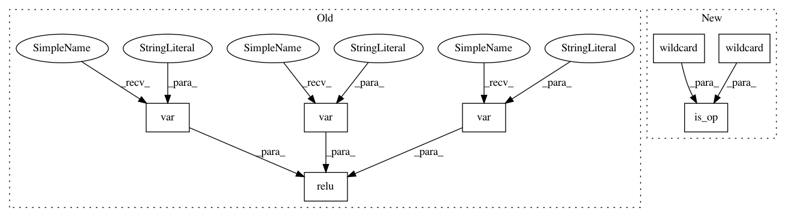

81ad18edc7360dc7110a479e051ba9161a25f2cf,python/tvm/relay/op/contrib/dnnl.py,,make_pattern,#Any#,70
Before Change
def make_pattern(with_bias=True):
data = _expr.var("data")
weight = _expr.var("weight")
bias = _expr.var("bias")
conv = _op.nn.conv2d(data, weight)
if with_bias:
conv_out = _op.add(conv, bias)
else:
conv_out = conv
return _op.nn.relu(conv_out)
@register_pattern_table("dnnl")
def pattern_table():
After Change
def make_pattern(with_bias=True):
data = wildcard()
weight = wildcard()
bias = wildcard()
conv = is_op("nn.conv2d")(data, weight)
if with_bias:
conv_out = is_op("add")(conv, bias)
else:
conv_out = conv
return is_op("nn.relu")(conv_out)
@register_pattern_table("dnnl")
def pattern_table():
In pattern: SUPERPATTERN
Frequency: 3
Non-data size: 7
Instances
Project Name: apache/incubator-tvm
Commit Name: 81ad18edc7360dc7110a479e051ba9161a25f2cf
Time: 2020-05-26
Author: comaniac0422@gmail.com
File Name: python/tvm/relay/op/contrib/dnnl.py
Class Name:
Method Name: make_pattern
Project Name: apache/incubator-tvm
Commit Name: 81ad18edc7360dc7110a479e051ba9161a25f2cf
Time: 2020-05-26
Author: comaniac0422@gmail.com
File Name: tests/python/relay/test_pass_merge_composite.py
Class Name:
Method Name: make_conv_bias_relu_pattern
Project Name: apache/incubator-tvm
Commit Name: 81ad18edc7360dc7110a479e051ba9161a25f2cf
Time: 2020-05-26
Author: comaniac0422@gmail.com
File Name: tests/python/relay/test_pass_merge_composite.py
Class Name:
Method Name: make_bn_relu_pattern